Hi, my name is J.S. "Jayess" Wang. As an inquisitive ENTP-A (Myers-Briggs), I enjoy exploring the mystery of the unknown and solving complex problems.
With an active imagination and insatiable curiosity since an early age, I fondly remember my childhood as a milder version of Calvin's life in the comic strip, Calvin & Hobbes. When I wasn't flying my cardboard rocket or building impenetrable fortresses out of furniture, bedding, or Legos, I was outside riding my bike and climbing mulberry trees with the neighborhood kids.
As I got older, I treasured the timeless wisdom in books and developed a unique worldview from traveling the globe. I learned the art of thinking and writing critically — how to ask questions, seek answers, and defend my ideas –– which allowed me to connect seemingly unrelated dots into something new, cohesive, and insightful. This growth-oriented mindset has helped me to reinvent myself and succeed in my many endeavors, whether as a photographer, producer, editor, mentor, or student. Which brings me to UX design and technology today.
I am fascinated with new technologies that disrupt and shape society on both a micro- and macro-level. The design trends and ethical questions we will face over the next 25 years — simply in smart devices (IoT), artificial intelligence, and AR/VR alone — will challenge designers to “think different” and transform industries in dynamic and unexpected ways. I believe our greatest opportunity will lie in how we architect technology to align with and augment our humanity, society, and needs.
Let’s reimagineer the world together.
J.S. "Jayess" Wang
UX Designer + Researcher based in Los Angeles, CA.
Creative storyteller, visual strategist, and empathetic advocate.

ABOUT
Wanna connect?
I'd love to hear from you! To get in touch, please e-mail me or say hello on LinkedIn or Instagram. Also, please feel free to download my resume.